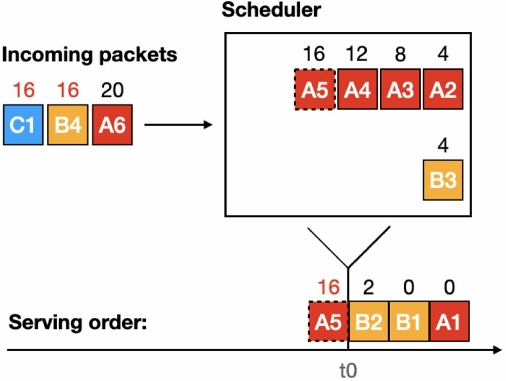

Hello!
I am a Ph.D. candidate in Computer Science at New York University, advised by Prof. Qiaoyu Tan. My current research focuses on agentic reasoning, graph learning, and multimodal large language models, with an emphasis on building reasoning systems for structured data, efficient search-augmented agents, and multimodal graph learning. I was also a Research Scientist Intern at Adobe Research.
Previously, I worked on high-speed datacenter network systems at NYU under the supervision of Prof. Grace Liu and Prof. H. Jonathan Chao. I received my M.S. in Computer Engineering from New York University and B.Eng. in Software Engineering from Northeastern University (China).
I'm currently seeking internship opportunities for Summer 2027. Feel free to reach out via email!
News
- [08/2026] Two papers accepted to EMNLP 2026: GraphVerse and OMG-VLM.
- [05/2026] One paper accepted to KDD 2026: MLaGA.
- [05/2026] Started as a Research Scientist Intern at Adobe Research, San Jose.
- [04/2026] One paper accepted to ACL 2026: AgentGL.
- [03/2026] Two papers accepted to CVPR 2026: GraphVLM and Mario.
- [02/2025] Joined the DIR Lab and began research on graph learning and agentic reasoning.
Publications
Agentic Reasoning
Network Systems

Experience
-
Adobe Research · Research Scientist Intern May 2026 – Aug 2026
Research on causal reasoning with LLMs for recommender systems.
Mentors: Dr. Eunyee Koh, Dr. Somdeb Sarkhel, Dr. Junda Wu. -
Data Intelligence and Reasoning Lab, NYU · Graduate Research Assistant Feb 2025 – Present
Research on agentic reasoning, RAG, graph learning, and multimodal LLMs.
Advisor: Prof. Qiaoyu Tan. -
Network System Lab, NYU · Graduate Research Assistant Sept 2022 – Feb 2025
Research on security and efficiency in radio access network and datacenter network systems.
Advisor: Prof. Grace Liu. -
High Speed Network Lab, NYU · Graduate Research Assistant Jan 2021 – May 2022
Research on programmable packet scheduling in datacenter networks.
Advisor: Prof. H. Jonathan Chao.
Professional Activities
- Reviewer: ICLR ’27, WSDM ’27, CIKM ’26, CIKM ’25, IEEE TKDE, ACM TKDD, ACM Computing Surveys
- Guest Lecturer / Course Tutor: DATS-SHU 369 Machine Learning with Graphs (Spring 2026, Spring 2025), CSCI-SHU 308 Computer Networking (2023)
- Teaching Assistant: CSCI-SHU 360 Machine Learning (Fall 2024), CSCI-SHU 2314 Discrete Mathematics (Spring 2024)
Interests
-

- Badminton
- Hiking
- Rubik’s Cube
- Musicals
- Reading
- Traveling